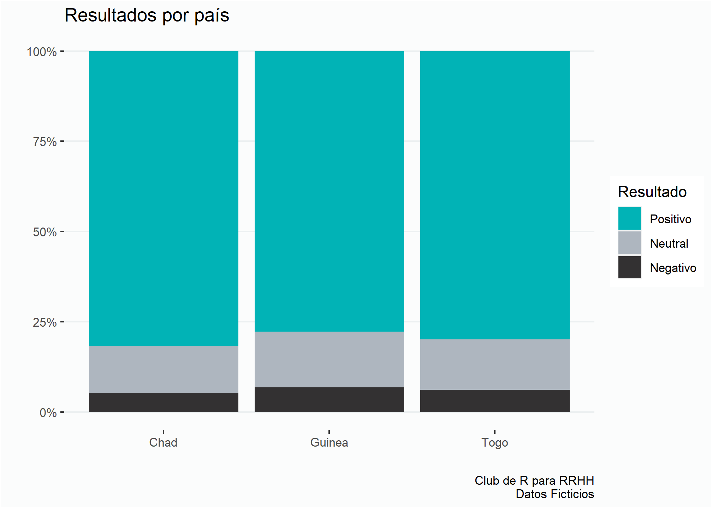
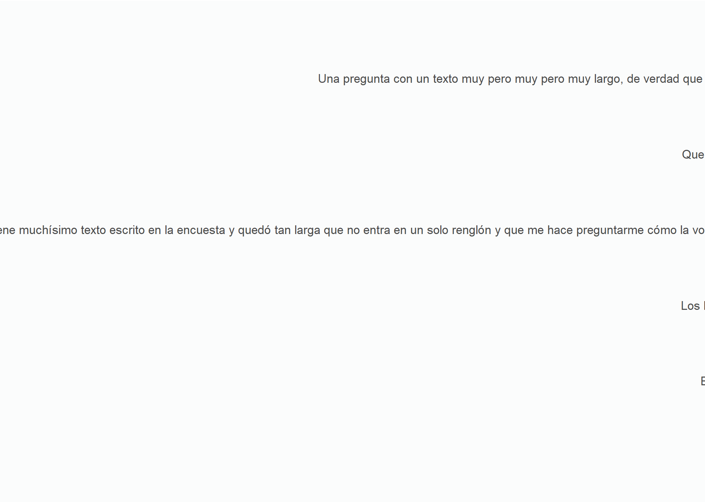
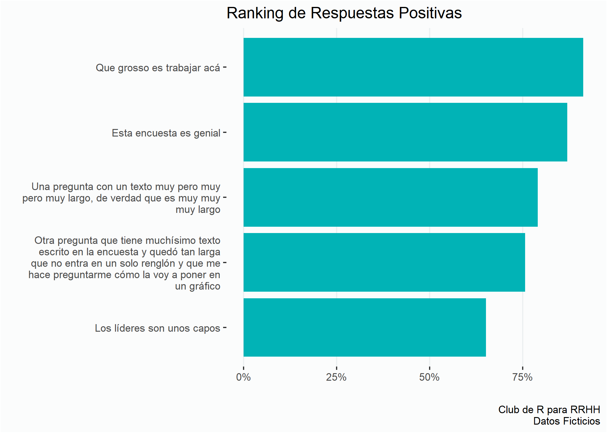
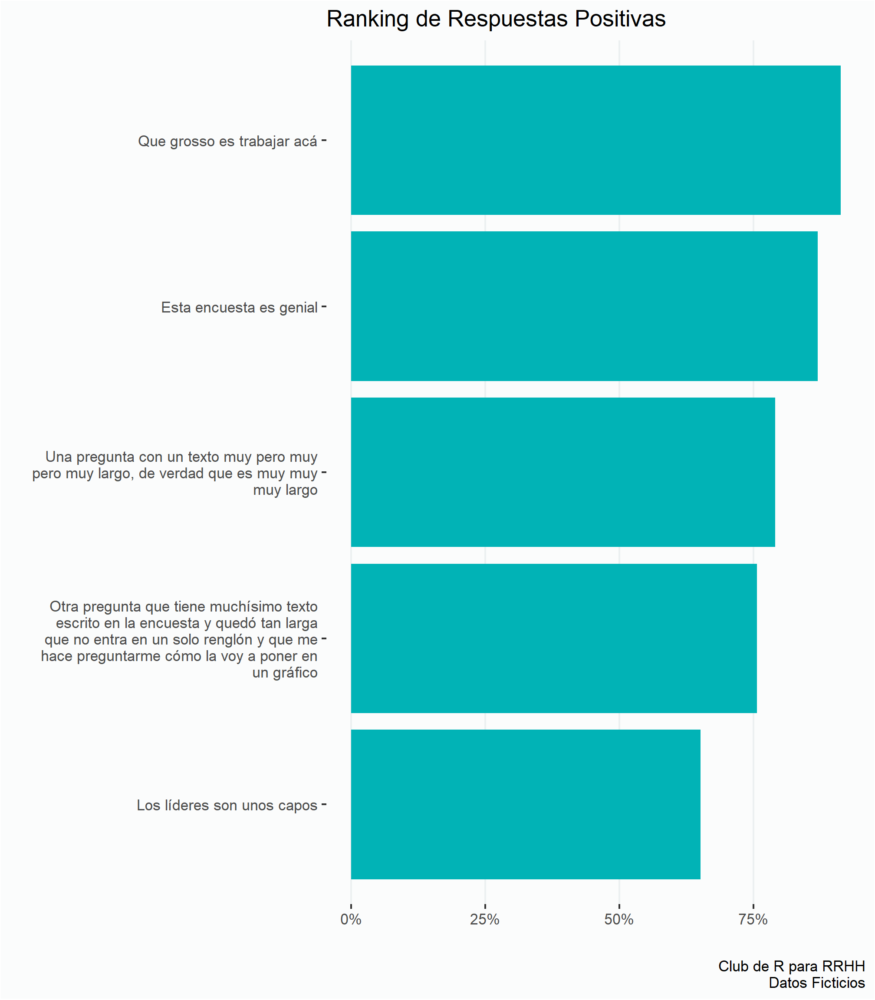
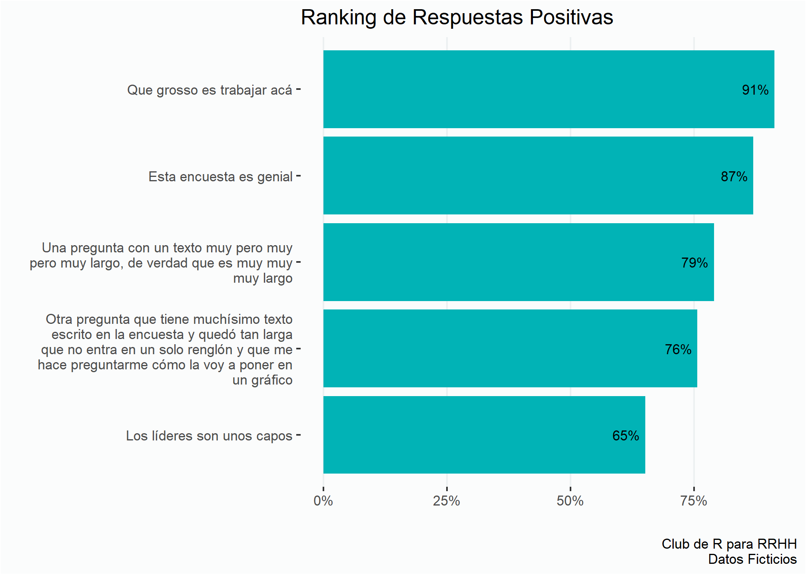
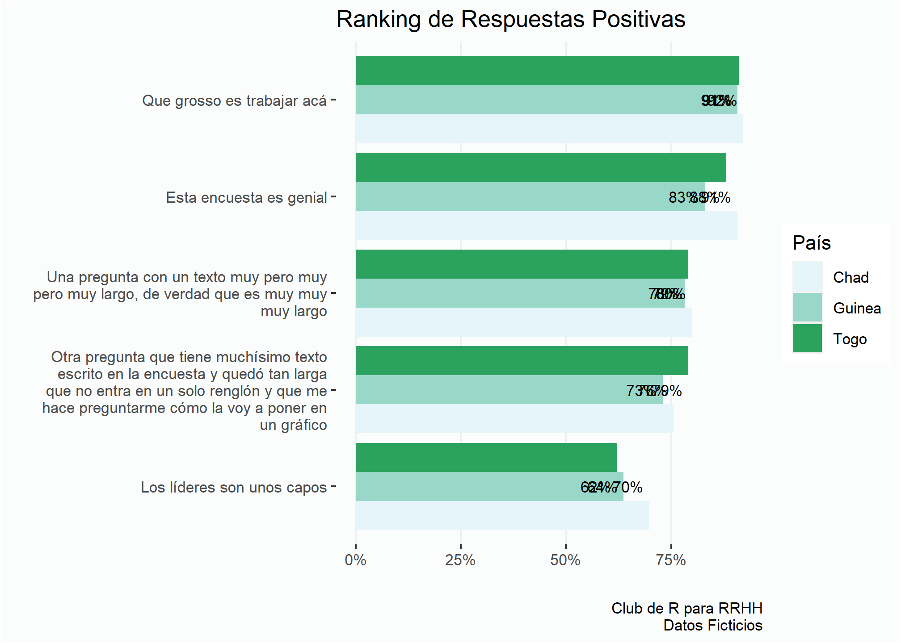
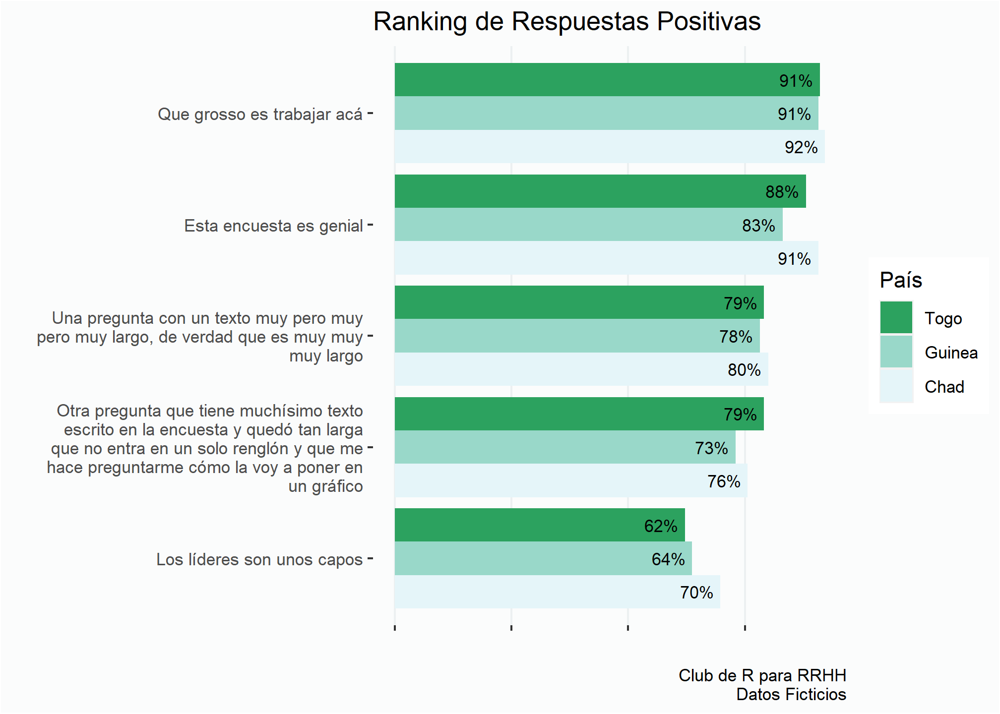
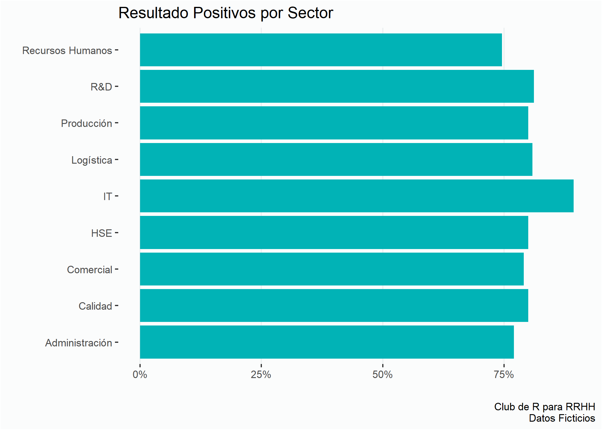
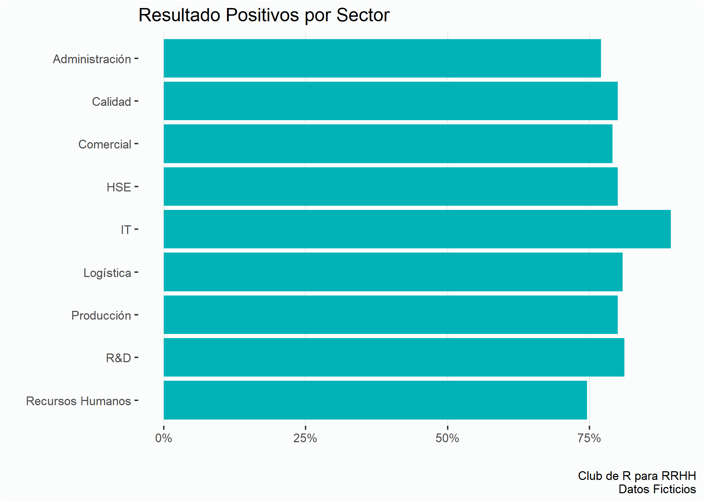
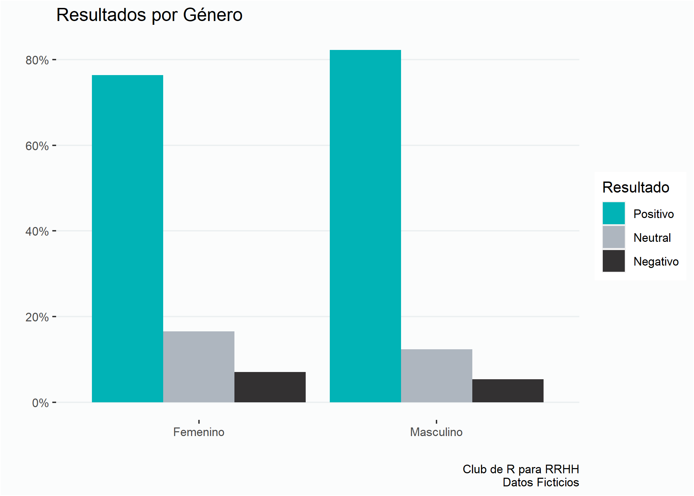

knitr::opts_chunk$set(echo = TRUE, message = FALSE, warning = FALSE, fig.retina = 3,
out.width = "80%")Introducción
Esta presentación se centra en algunos microaprendizajes de un proyecto de análisis de resultados de una encuesta de diversidad e inclusión.
Lo razón por la que lo llamo “microaprendizajes” es porque no tuve que aprender muchas cosas desde cero, pero si aprendí varios truquitos que me sirvieron mucho.
Voy a usar una encuesta simulada para no violar la confidencialidad de los datos, pero va a ser algo análogo a lo que estuve usando en el proyecto.
Para explotar al máximo esta sesión conviene saber un poco de hacer informes con RMarkdown. Si necesitás un tutorial sobre ese tema te comparto el video que hicimos el año pasado.
Repo
Este material se puede utilizar y compartir sin fines comerciales y citando la fuente.

Aprendizajes
El chunk de ‘setup’
El bloque de código de setup es muy útil para controlar cómo se van a comportar todos los bloques de código.
Mi archivo original tiene +150 bloques de código, imaginen si modificara uno por uno las características de cada bloque.
Ordenar el código
Tener un orden en el código es muy importante para poder ir y venir rápido y encontrar rápidamente las cosas, modificar algo, y demás.
Dentro de los bloques de código también es importante poner títulos o marcadores que nos ayuden a encontrar rápido las cosas. El orden que definí fue:
- Librerías.
- Configuraciones generales
- Carga de datos
- Preprocesamiento y limpieza de datos
- Funciones
# Librerías -----
library(tidyverse)
library(gt)
library(scales)
library(extrafont)
library(readxl)
# Configuraciones generales ----------
# Colores
verde <- "#01B3B6"
negro <- "#333132"
gris <- "#AEB6BF"
color3 <- c(verde, gris, negro)
color2 <- c(verde, negro)
# Opciones de visualización --------
options(scipen = 999) # Modifica la visualización de los ejes numérico a valores nominales
loadfonts(quiet = TRUE) # Permite cargar en R otros tipos de fuentes.
# Estilo limpio sin líneas de fondo
estilo <- theme(panel.grid = element_blank(),
plot.background = element_rect(fill = "#FBFCFC"),
panel.background = element_blank(),
text = element_text(family = "Ubuntu Mono"))
# Estilo limpio con líneas de referencia verticales en gris claro
estilov <- theme(panel.grid = element_blank(),
plot.background = element_rect(fill = "#FBFCFC"),
panel.background = element_blank(),
panel.grid.major.x = element_line(color = "#ecf0f1"),
text = element_text(family = "Ubuntu Mono"))
# Estilo limpio con líneas de referencia horizontales en gris claro
estiloh <- theme(panel.grid = element_blank(),
plot.background = element_rect(fill = "#FBFCFC"),
panel.background = element_blank(),
panel.grid.major.y = element_line(color = "#ecf0f1"),
text = element_text(family = "Ubuntu Mono"))
# Creo un objeto con un texto que se va a repetir mucho a lo largo del análisis
fuente <- "Club de R para RRHH\nDatos Ficticios"
# Creo objetos para formatear las etiquetas numéricas de los ejes x e y
eje_x_per <- scale_x_continuous(labels = scales::percent_format(accuracy = 1))
eje_y_per <- scale_y_continuous(labels = scales::percent_format(accuracy = 1))
# Carga de Datos -----
encuesta <- read_excel("data/encuesta.xlsx")
plantel <- read_excel("data/plantel.xlsx")
# Preparación de datos -----------
# Pivotea el dataset a un formato largo
enc <- encuesta %>%
pivot_longer(cols = c(7:11),
names_to = "pregunta",
values_to = "valor")
# Cambia nombres y Organiza variables ordinales
enc <- enc %>%
rename(id = "ID",
genero = `¿Cómo definirías tu identidad de género?`,
unidad = "Unidad de Negocio",
pais = "País",
sector = "Sector",
cargo = "Tu cargo/nivel:") %>%
mutate(cargo = factor(cargo,
levels = c("Management", "Líder", "Contribuidor individual")))
# Crea categorías de resultados
enc <- enc %>%
mutate(resultado = if_else(valor == "Totalmente de acuerdo", "Positivo",
if_else(valor == "De acuerdo", "Positivo",
if_else(valor == "Ni de acuerdo ni en desacuerdo",
"Neutral", "Negativo"
)
)
),
resultado = factor(resultado,
levels = c("Positivo", "Neutral", "Negativo")))Y comenten el código por amor a Jebús!
Poner el nombre a los bloques de código
Algo muy útil es ponerle nombre a los bloques de código. Por un lado porque es fácil para navegar entre bloques buscándolos en RStudio.
Por ejemplo, probemos un gráfico simple:
ggplot(enc, aes(x = pais, fill = resultado)) +
geom_bar(position = "fill") +
scale_fill_manual(values = c(color3)) +
estiloh +
eje_y_per +
labs(title = "Resultados por país",
fill = "Resultado",
x = "", y = "",
caption = fuente)
Puede ocurrir que necesitemos reutilizar el gráfico. Hacer la gran stackoverflow (copiar y pegar el código) es una opción, pero puede generar errores y por otro lado implica tiempo de procesamiento.
En cambio, con la opción ref.label podemos reutilizar lo que hicimos antes, de una forma más prolija y cómoda pasando el nombre del bloque anterior.
Internamente, lo que hace R es reutilizar el código creado anteriormente.
{r ref.label="grafico1"}Voilá!
ggplot(enc, aes(x = pais, fill = resultado)) +
geom_bar(position = "fill") +
scale_fill_manual(values = c(color3)) +
estiloh +
eje_y_per +
labs(title = "Resultados por país",
fill = "Resultado",
x = "", y = "",
caption = fuente)
Etiquetas largas
A veces necesitamos presentar en un gráfico o en una tabla la pregunta original de la encuesta. Por ejemplo, una de las “preguntas” de la encuesta dice:
Otra pregunta que tiene muchísimo texto escrito en la encuesta y quedó tan larga que no entra en un solo renglón y que me hace preguntarme cómo la voy a poner en un gráfico
Ahora veamos cómo se ven las preguntas en un gráfico si intentamos hacer un ranking.
enc %>%
group_by(pregunta, resultado) %>%
summarise(cant = n()) %>%
mutate(prop = cant/sum(cant)) %>%
filter(resultado == "Positivo") %>%
ggplot(aes(x = prop, y = pregunta)) +
geom_col(fill = verde) +
estilov +
eje_x_per +
labs(title = "Ranking de Respuestas Positivas",
x = "", y = "",
caption = fuente)
Queda hermoso, no? 😱
Para sortear este problema podemos crear una columna nueva, y usar la función str_wrap() del paquete stringr.
Lo que hace esto es agregar el símbolo \n que divide el texto en renglones. Con el parámetro width le indicamos la cantidad de caracteres de largo que tendrá cada renglón.
# Divide el largo de 'función' en varias líneas
enc$preg2 <- str_wrap(enc$pregunta, width = 40)
# Veamos como queda esto en el df
head(enc$preg2,5)[1] "Una pregunta con un texto muy pero muy\npero muy largo, de verdad que es muy muy\nmuy largo"
[2] "Otra pregunta que tiene muchísimo texto\nescrito en la encuesta y quedó tan larga\nque no entra en un solo renglón y que me\nhace preguntarme cómo la voy a poner en\nun gráfico"
[3] "Los líderes son unos capos"
[4] "Que grosso es trabajar acá"
[5] "Esta encuesta es genial" Y ahora podemos hacer un gráfico que se vea bien:
enc %>%
group_by(preg2, resultado) %>%
summarise(cant = n()) %>%
mutate(prop = cant/sum(cant)) %>%
filter(resultado == "Positivo") %>%
ggplot(aes(x = prop, y = reorder(preg2, prop))) +
geom_col(fill = verde) +
estilov +
eje_x_per +
labs(title = "Ranking de Respuestas Positivas",
x = "", y = "",
caption = fuente)
Ahora queda mucho mejor 👍
También se puede jugar con la altura del gráfico usando la opción fig.height en las opciones del bloque para que haya más espacio entre las barras.
{r fig.height=8} # El tamaño es exagerado en este casoranking <- enc %>%
group_by(preg2, resultado) %>%
summarise(cant = n()) %>%
mutate(prop = cant/sum(cant)) %>%
filter(resultado == "Positivo") %>%
ggplot(aes(x = prop, y = reorder(preg2, prop))) +
geom_col(fill = verde) +
estilov +
eje_x_per +
labs(title = "Ranking de Respuestas Positivas",
x = "", y = "",
caption = fuente)
ranking
Texto en los gráficos
Es simple agregar las etiquetas de datos a un gráfico:
ranking +
geom_text(aes(label = percent(prop, # Muestra los resultados como porcentaje
accuracy = 1)), # Indica la cantidad de decimales
size = 3, # Cambia el tamaño de la letra
hjust = 1.2, # Mueve la etiqueta para la izquierda
family = "Ubuntu Mono") 
Miremos lo que pasa cuando queremos agregar más información al gráfico, por ejemplo, con los resultados por país.
ranking <- enc %>%
group_by(pais, preg2, resultado) %>%
summarise(cant = n()) %>%
mutate(prop = cant/sum(cant)) %>%
filter(resultado == "Positivo") %>%
ggplot(aes(x = prop, y = reorder(preg2, prop), fill = pais)) +
geom_col(position = "dodge") +
estilov +
eje_x_per +
labs(title = "Ranking de Respuestas Positivas",
x = "", y = "",
fill = "País",
caption = fuente) +
scale_fill_brewer(palette = 2)
ranking +
geom_text(aes(label = percent(prop, # Muestra los resultados como porcentaje
accuracy = 1)), # Indica la cantidad de decimales
size = 3, # Cambia el tamaño de la letra
hjust = 1.2, # Mueve la etiqueta para la izquierda
family = "Ubuntu Mono") # Modifica la fuente
El problema es que todas las etiquetas de cada barra están centradas con la etiqueta del eje y. En la guía de geom_text en la documentación de ggplot2 encontramos como solucionar el problema usando el parámetro position_dodge().
ranking <- ranking +
geom_text(aes(label = percent(prop, # Muestra los resultados como porcentaje
accuracy = 1)), # Indica la cantidad de decimales
position = position_dodge(0.9), # Acomoda cada etiqueta con las barras
size = 3, # Cambia el tamaño de la letra
hjust = 1.2, # Mueve la etiqueta para la izquierda
family = "Ubuntu Mono") # Modifica la fuente
rankingOtra mejora que podemos hacer al gráfico es acomodar los colores en la leyenda (la referencia de los colores) para que tengan la misma secuencia que tiene en el gráfico, es decir que el verde oscuro aparezca primero al igual que la barra con el verde más oscuro en el gráfico.
En esta página hay muchas variantes para trabajar con las etiquetas y leyendas.
ranking +
guides(fill = guide_legend(reverse=TRUE)) + # Invierte el orden de los colores en la leyenda
theme(axis.text.x = element_blank())
Cuando estamos mapeando una variable categórica en el eje y, R lo ordena alfabéticamente desde abajo hacia arriba.
enc %>%
group_by(sector, resultado) %>%
summarise(cant = n()) %>%
mutate(prop = cant/sum(cant)) %>%
filter(resultado == "Positivo") %>%
ggplot(aes(x = prop, y = sector)) +
geom_col(fill = verde) +
estilov +
eje_x_per +
labs(title = "Resultado Positivos por Sector",
x = "", y = "",
caption = fuente)
Podemos usar la función fct_rev del paquete forcats para poner al revés las etiquetas del eje y cuando estamos mapeando las variables dentro de ggplot
enc %>%
group_by(sector, resultado) %>%
summarise(cant = n()) %>%
mutate(prop = cant/sum(cant)) %>%
filter(resultado == "Positivo") %>%
ggplot(aes(x = prop, y = fct_rev(sector))) + # Invertimos el orden del eje y
geom_col(fill = verde) +
estilov +
eje_x_per +
labs(title = "Resultado Positivos por Sector",
x = "", y = "",
caption = fuente)
Funciones
Esto es un work-in-progress y tengo que agradecer a Mónica Alonso de RLadies Buenos Aires por la ayuda.
El problema es que me encontré muchas veces escribiendo esta secuencia de código muchas veces:
# Calcular pocertajes de respuestas
enc %>%
group_by(genero, resultado) %>%
summarise(cant = n()) %>%
mutate(prop = cant / sum(cant))# A tibble: 6 × 4
# Groups: genero [2]
genero resultado cant prop
<chr> <fct> <int> <dbl>
1 Femenino Positivo 1127 0.764
2 Femenino Neutral 244 0.165
3 Femenino Negativo 104 0.0705
4 Masculino Positivo 1477 0.823
5 Masculino Neutral 222 0.124
6 Masculino Negativo 96 0.0535Muchas veces resolví copiando y pegando el código, pero se hace tedioso controlar cada uno de los bloques de código y gráficos. Así que para eso, podemos crear nuestras propias funciones.
cant_prop_gen <- function(df){
df %>%
group_by(genero,resultado) %>%
summarise(cant = n()) %>%
mutate(prop = cant / sum(cant))
}Y ahora lo podemos incorporar en nuestro flujo de trabajo como cualquier función.
enc %>%
cant_prop_gen() %>%
ggplot(aes(x = genero, y = prop, fill = resultado)) +
geom_col(position = "dodge") +
eje_y_per +
estiloh +
scale_fill_manual(values = color3) +
labs(title = "Resultados por Género",
x = "", y = "",
fill = "Resultado",
caption = fuente)
Todavía estoy resolviendo como crear funciones usando cualquier tipo de variable en la función. Por ahora, lo estoy resolviendo creando una función para cada combinación de variables que agrupo. No es lo ideal, pero es lo que hay. 🤷
Capaz encuentre lo que necesito en estos libros:
Ya les contaré… stay tuned 📺
Código Inline
Como sabemos, algo interesante de RMarkdown es la posibilidad de utilizar el código de los bloques dentro del texto.
Así que creemos un pequeño objeto primero para almacenar los resultados positivos y negativos por género.
result_genero <- enc %>%
cant_prop_gen()
result_genero# A tibble: 6 × 4
# Groups: genero [2]
genero resultado cant prop
<chr> <fct> <int> <dbl>
1 Femenino Positivo 1127 0.764
2 Femenino Neutral 244 0.165
3 Femenino Negativo 104 0.0705
4 Masculino Positivo 1477 0.823
5 Masculino Neutral 222 0.124
6 Masculino Negativo 96 0.0535Usando la llamada de datos de un dataframe con nombre_df[fila,columna] puedo usar los resultados almacenados para incluirlos dentro del texto por ejemplo para decir:
Los resultados positivos para las personas de género femenino es 0.7640678.
Lo ideal es poder ver ese resultado como un porcentaje, así que intuitivamente podemos usar la función percent para lograr eso…
…y no va a funcionar. Obtenemos el siguiente mensaje de error:
# Intento de código inline
`r percent(result_genero[1,4])`
# Quitting from lines 425-441 (r4hr_microaprendizajes.Rmd)
# Error in is.finite(x) : default method not implemented for type 'list'Para que la función percent funcione la tenemos que combinar con la función pull . Y ahora así sí funciona:
Los resultados positivos para las personas de género femenino es 76% .
Trust the Tidyverse
Lo barato sale caro
Dicho popular

La encuesta que estábamos analizando era anónima, lo cual hacía imposible poder cruzar datos contra el listado de empleados.
Pero, sí podíamos calcular los resultados según la composición del liderazgo. Para eso teníamos que calcular el porcentaje de líderes hombres y mujeres por sector.
# Cuento la cantidad de líderes por sector y géenero
plantel <- plantel %>%
rename(division = `Unidad de Negocio`,
lider = Líder,
sexo = Género,
sector = Sector,
pais = País) %>%
filter(lider == "true") %>%
group_by(pais, division, sector, lider, sexo) %>%
tally() %>%
ungroup()
plantel# A tibble: 106 × 6
pais division sector lider sexo n
<chr> <chr> <chr> <chr> <chr> <int>
1 Chad Unidad 1 Comercial true Femenino 4
2 Chad Unidad 1 Comercial true Masculino 3
3 Chad Unidad 1 R&D true Femenino 5
4 Chad Unidad 1 R&D true Masculino 1
5 Chad Unidad 2 Administración true Femenino 3
6 Chad Unidad 2 Administración true Masculino 6
7 Chad Unidad 2 Calidad true Femenino 1
8 Chad Unidad 2 Comercial true Femenino 5
9 Chad Unidad 2 Comercial true Masculino 1
10 Chad Unidad 2 Recursos Humanos true Femenino 3
# ℹ 96 more rows# Pivoteo el dataset a un dataset ancho
plantel <- plantel %>%
pivot_wider(.,
names_from = sexo,
values_from = n)
# Reemplaza los NA con un 0
plantel[is.na(plantel)] <- 0
# Calculo porcentaje de líderes hombres
plantel %>%
mutate(prop_lider_hombre = if_else(Femenino == 0, 1, Masculino / (Masculino +Femenino))) %>%
select(-lider)# A tibble: 60 × 6
pais division sector Femenino Masculino prop_lider_hombre
<chr> <chr> <chr> <int> <int> <dbl>
1 Chad Unidad 1 Comercial 4 3 0.429
2 Chad Unidad 1 R&D 5 1 0.167
3 Chad Unidad 2 Administración 3 6 0.667
4 Chad Unidad 2 Calidad 1 0 0
5 Chad Unidad 2 Comercial 5 1 0.167
6 Chad Unidad 2 Recursos Humanos 3 0 0
7 Chad Unidad 3 Administración 2 2 0.5
8 Chad Unidad 3 Calidad 2 2 0.5
9 Chad Unidad 3 Comercial 5 20 0.8
10 Chad Unidad 3 HSE 1 0 0
# ℹ 50 more rows